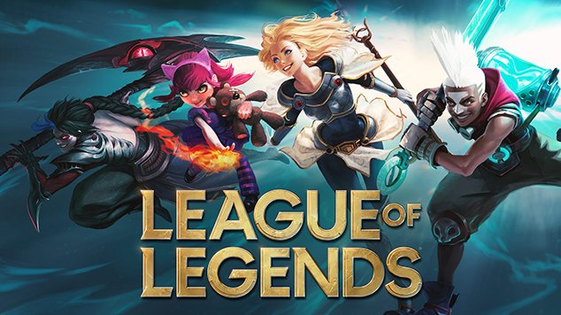
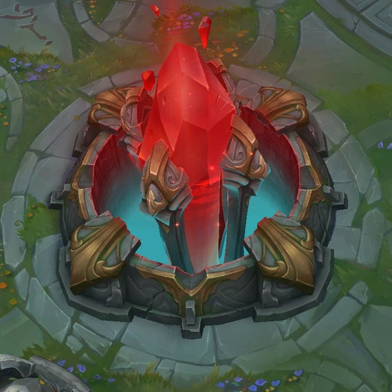

Szabad idő
 Szabad időmben általában játszani szokktam a barátaimmal együtt. Az egyik kedvenc játékunk a League of Legends. A League of legends-t a Riot Games készítette 2009-ben. 2014 körül kezdtem el vele játszani és azóta is játszom vele.

Ez a játék egy Moba játék ahol két 5 főscsapat harcol egymás ellen. az győz aki először elpusztítja az ellenfél Nexus-át.
Egy mecs átlagosan 20-45 perc. A leghoszzab PvP mecs ha jól tudom több mint 3 óra. A leghoszabb mecsem közel másfél óra volt.
A játékon belül több féle képpen lehet játszani például : normal ami egy normál mecs egy három ágú mappon, draft ahol a két csapat kitilt összesen 10 hőst a játékból, Aram ahol mindenki véletlen szerűen kapnak hősököt egy egy ágú mappon
A játékot foyamatosan fejlesztik és javítják.
A riot games már adott ki több játékot is és még fejlesztenek további játékokat.
A team fight tactics ami egy stratégiai játék 8 ember ellen.
Az egész körökre van osztva és minden körben vehetünk hősöket.
Minden Hősnek van valamilyen képessége és a legerősseb kombinációk nyernek
Legend of Runaterra ami egy kártya játék .
Sokak szerint hasonló mint a Heartstone, Én játszottam mind kettővel és inkább annyi a közös bennük ,hogy mind a kettő kártya játék.
Ebben a játékban paklikat kell csinálni hogy játszhassun.
egy pakliban 40 kártya lehet és egy fajta kártyából 3 ugyanolyan lehet.
A legujabb a Valorant ami egy FPS Shotter játék hasonlít a CS:GO-ra csak itt az embereknek van külön képessége.